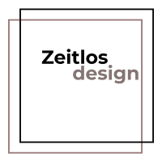

<mat-toolbar>
  <button mat-icon-button class="example-icon" aria-label="Example icon-button with menu icon"
    (click)="sidenav.toggle()">
    <mat-icon>menu</mat-icon>
  </button>
  <div class="example-spacer"> 
  </div>
  <button mat-icon-button class="example-icon" aria-label="Example icon-button with search icon">
    <mat-icon> search </mat-icon>
  </button>

  <button mat-icon-button class="example-icon favorite-icon" aria-label="Example icon-button with heart icon">
    <mat-icon>favorite</mat-icon>
  </button>
  <button mat-icon-button class="example-icon" aria-label="Example icon-button with account icon">
    <mat-icon>account_circle</mat-icon>
  </button>
  <button mat-icon-button class="example-icon" aria-label="Example icon-button with shopping basket icon">
    <mat-icon> shopping_basket </mat-icon>
  </button>

</mat-toolbar>

<hr>

<mat-drawer-container class="example-container">
  <mat-drawer class="left-sidenav" mode="side" opened #sidenav>
    <mat-nav-list>
      <mat-list-item>
        <button mat-icon-button>
          <mat-icon>home</mat-icon>
        </button>
        Dashboard
      </mat-list-item>
      
     
      <mat-expansion-panel [class.mat-elevation-z0]="true" dense>
        <mat-expansion-panel-header>
          <button mat-icon-button>
            <mat-icon>shopping_basket</mat-icon>
            E-commerce
          </button>
        </mat-expansion-panel-header>
        <mat-nav-list dense>
            <a mat-list-item routerLink="#"><mat-icon>weekend</mat-icon>Product manage</a>
            <a mat-list-item routerLink="product"><mat-icon>add_circle</mat-icon>Add new product</a>
        </mat-nav-list>
    </mat-expansion-panel>
    <mat-expansion-panel [class.mat-elevation-z0]="true" dense>
        <mat-expansion-panel-header>
          <button mat-icon-button>
            <mat-icon>lock</mat-icon>
            Privacy
          </button>
        </mat-expansion-panel-header>
        <mat-nav-list dense>
            <a mat-list-item routerLink="#"><mat-icon>person_add</mat-icon>Partnership Request</a>
            <a mat-list-item routerLink="#"><mat-icon>visibility</mat-icon>Profile Visibility</a>
        </mat-nav-list>
    </mat-expansion-panel>


      <mat-list-item>
        <button mat-icon-button>
          <mat-icon>account_circle</mat-icon>
        </button>
        User
      </mat-list-item>
      <mat-list-item>
        <button mat-icon-button>
          <mat-icon>folder</mat-icon>
        </button>
        Documentation
      </mat-list-item>
    </mat-nav-list>
  </mat-drawer>
  <mat-drawer-content>
    <router-outlet> </router-outlet>
  </mat-drawer-content>
</mat-drawer-container>


<footer class="footer-new">
We <mat-icon>favorite_boarder</mat-icon> Zeitlos design
  </footer>